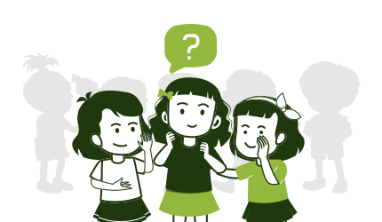
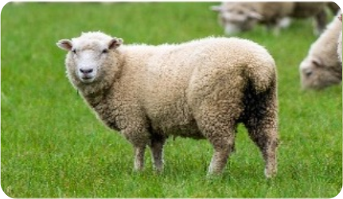
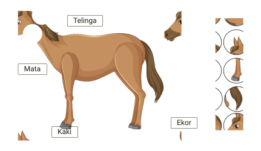
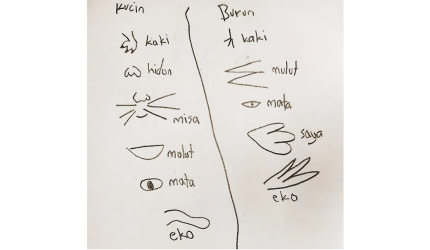
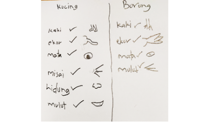

Bahasa Pengaturcaraan
Sasaran
Murid Asas Sains Komputer
Strategi
Pedagogi Terbeza
Kaedah
- Secara individu
- Secara berkumpulan
Dalam Pedagogi Terbeza, guru telah mengenal pasti muridnya dan menetapkan kandungan.
Tajuk
Mengenali Bahasa Pengaturcaraan Scratch
⇨
Objektif Pembelajaran
- Melaksanakan pemasangan (Installation) perisian (contoh Scratch)
- Membuka, menyimpan dan menutup fail projek
- Menggunakan arahan (contoh blok) yang sesuai
- Melaksanakan (run) dan menghentikan (stop) atur cara
- Melaksanakan nyahpijat (debug) pada atur cara
Guru mengenal pasti kemahiran murid dalam bahasa pengaturcaraan (Bahasa Pengaturcaraan Scratch) yang akan dipelajari sebelum memulakan PdP melalui soal selidik yang dijalankan.
- Guru memberi soal selidik berkaitan pengetahuan dan kemahiran Scratch kepada murid.
- Guru mengkategorikan murid kepada tiga kumpulan iaitu Alfa, Beta dan Gamma.
- Tiga kumpulan ini dibahagikan mengikut kemahiran dalam bahasa pengaturcaraan.
Kumpulan Alfa
Murid yang tiada pengalaman menggunakan Scratch

Kumpulan Beta
Murid yang pernah menggunakan Scratch

Kumpulan Gamma
Murid yang telah biasa menggunakan Scratch dan boleh menghasilkan aplikasi

Membuat penerokaan ke atas haiwan
Kumpulan Cerdik
Kumpulan Bijak
Kumpulan Arif
Kandungan (Sama)
Meneroka anggota badan haiwan
Proses (Beza)
Proses
- Menamakan haiwan
- Meneroka dan menamakan anggota badan haiwan
- Menulis perkataan
- Mencantum gambar anggota badan haiwan
- Merekod pemerhatian
- Membuat perbandingan
- Berkongsi hasil pemerhatian
Kumpulan Cerdik
- Murid meneroka model haiwan dan mencantumkan gambar anggota badan haiwan kepada bahagian yang betul dalam kad gambar yang disediakan.
- Murid menulis perkataan anggota badan haiwan.

Kumpulan Bijak
- Murid membuat penerokaan terhadap haiwan yang terdapat di persekitaran.
- Murid diminta merekod bahagian anggota badan yang dilihat dalam bentuk tulisan, lukisan, atau sebagainya.
- Murid menceritakan tentang anggota badan yang terdapat pada haiwan.
Kumpulan Arif
- Murid diminta membuat penerokaan ke haiwan di persekitaran.
- Murid mengenal pasti anggota badan haiwan yang dilihat dan merekod di dalam kad/senarai semak/nota.
- Murid membuat perbandingan anggota badan haiwan yang dilihat.
- Murid berkongsi dengan rakan tentang haiwan yang dihasilkan melalui cerita/tulisan/lukisan.

Murid mencantumkan gambar kad anggota badan haiwan dan menulis perkataan.
Kumpulan Cerdik
Produk
- Gambar dan perkataan anggota badan haiwan
- Laporan
- Rekod
- Senarai semak
- Tulisan/lukisan

Kumpulan Bijak
- Senarai semak (tulisan/gambar/verbal) anggota badan haiwan yang dilihat melalui penerokaan.
- Perkongsian dapatan

Kumpulan Arif
- Senarai semak/rekod/laporan anggota badan yang dilihat melalui penerokaan.
- Rekod perbandingan.
- Perkongisan/pembentangan.
